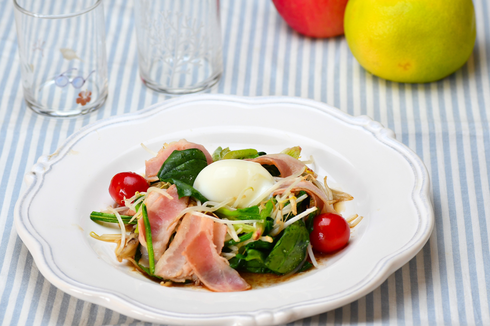

ベーコンもやしエッグ

材料（4人分）
- 朝のフレッシュハーフベーコン ... 2パック
- まいたけ ... １パック
- もやし ... １パック
- ほうれん草 ... 2株
- ミニトマト ... 8個
- ごま油... 大さじ１
- ウスターソース(A) ... 大さじ１
- 塩、こしょう(A) ... 少々
- 温泉卵 ... 4個
作り方（調理時間:10分/目安）
- ベーコンは半分に切る。もやしは洗い水けを切る。ほうれん草は4cmに切る。
- まいたけは小房にわけ、フライパンで焼き、取り出す。
- フライパンにごま油を熱し、ベーコン、ほうれん草、もやし、ミニトマトを入れさっと炒め、②をもどし、Ａで味を整える。
- 器に盛り、中央に温泉卵をのせ、添付のたれをかける。
提供
伊藤ハム米久ホールディングス（株）